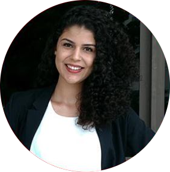
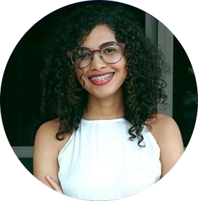
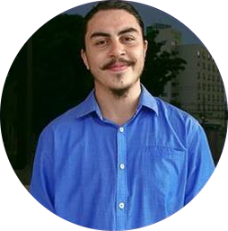

Gestão 2018 - 2019
(Archives)
Presidência
Ambas as participantes abaixo contribuíram para a produção de relatórios e projetos em parceria com o Conselho de Desenvolvimento Econômico da cidade de Uberlândia, com a Diretoria de Relações Internacionais da UFU e com o SEBRAE com o intuito de promover a internacionalização da cidade de Uberlândia.
 Diandra Schatz
Diandra Schatz
PRESIDENTE
Atual presidente do grupo, é estudante do sétimo período de Relações Internacionais e se dedica ao grupo desde 2016.
 Laura Hemilly
VICE-PRESIDENTE
Também cursa o sétimo período de Relações Internacionais e se dedica ao grupo desde 2016, ocupando até recentemente o cargo de presidente.
Eixo Academia
 Vinicius Ariel
Vinicius Ariel
COORDENADOR
Estudante do quarto período de Relações Internacionais, contribui com a consolidação do GEUCI por meio da produção de relatórios desde 2017.
 Laura Couto
Laura Couto
CONSULTORA
Mestranda em Relações Internacionais pelo PPGRI-UFU, participa do grupo desde 2018 e contribuiu para a estruturação do projeto do eixo academia.
Eixo Governo
 Hanna Issa
COORDENADORA
Coordenadora do eixo, é estudante do sétimo período do curso de Relações Internacionais e contribui com o GEUCI desde 2017.
 Mariana Seyfried
Mariana Seyfried
CONSULTORA
Mestranda no Programa de Pós Graduação em Relações Internacionais da Universidade Federal de Uberlândia, vem colaborando para o crescimento do GEUCI desde 2017.
Eixo Sociedade
 Daniella Alves
Daniella Alves
COORDENADORA
Participa do GEUCI desde 2017 e foi a responsável por criar o projeto do eixo sociedade, estruturando o mesmo em prol de uma aproximação da comunidade da cidade de Uberlândia do processo de internacionalização.
Eixo Negócios
 Paulo Cézer
COORDENADOR
Estudante de Relações Internacionais e membro do GEUCI desde 2018, faz a gestão das atividades do Eixo Negócios.
 João Pedro Gurgel
João Pedro Gurgel
CONSULTOR
Estudante de Relações Internacionais e membro do grupo desde 2019, auxilia junto com os demais na coordenação do eixo.